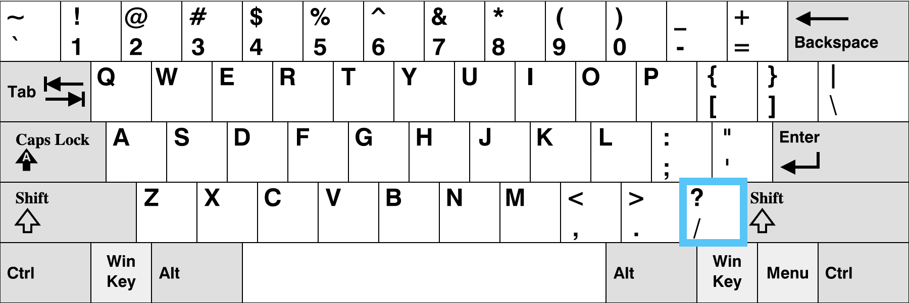
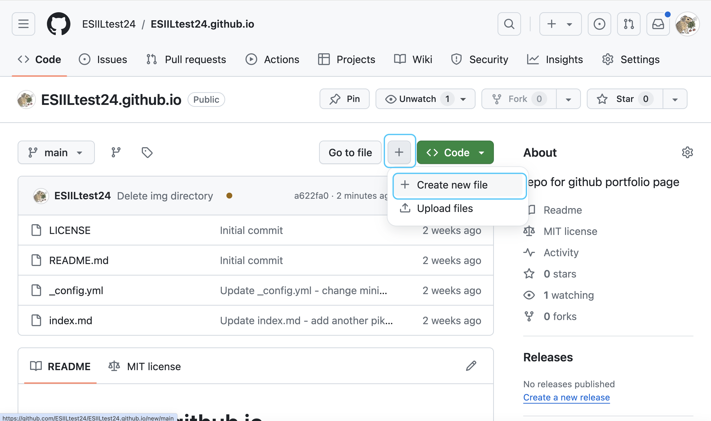
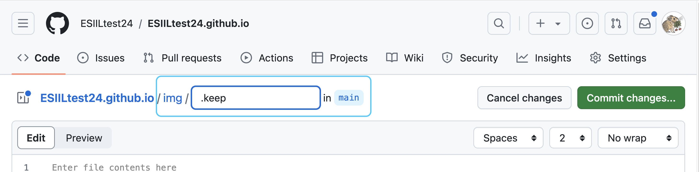
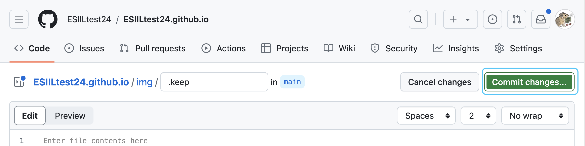
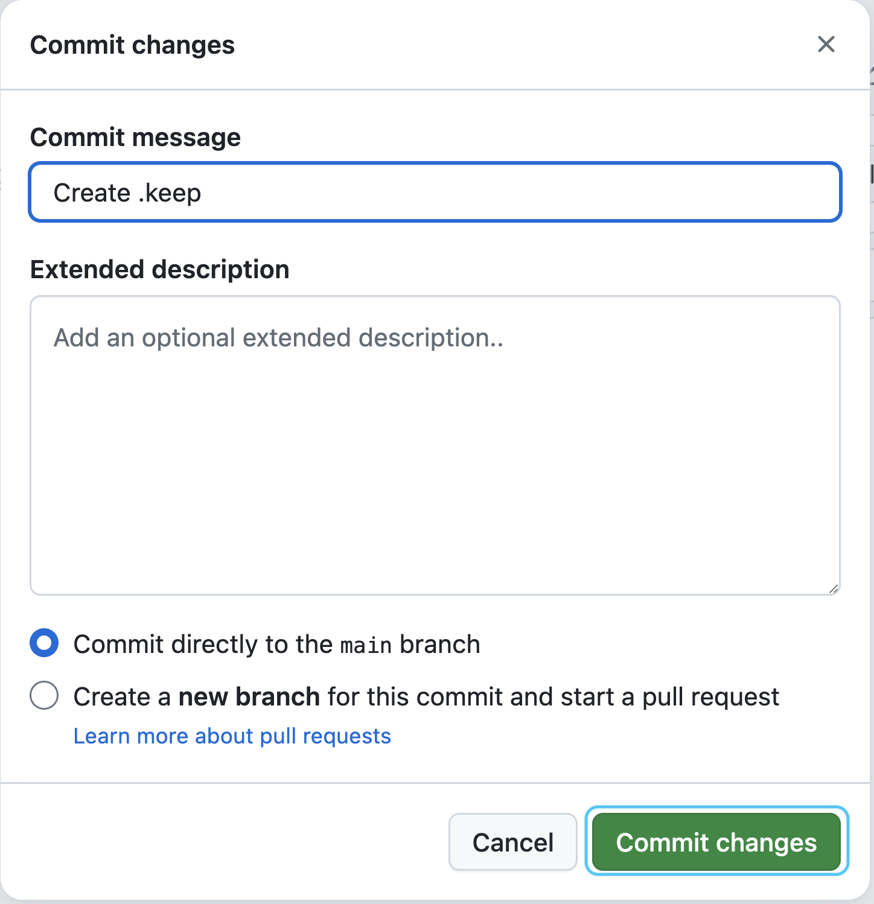
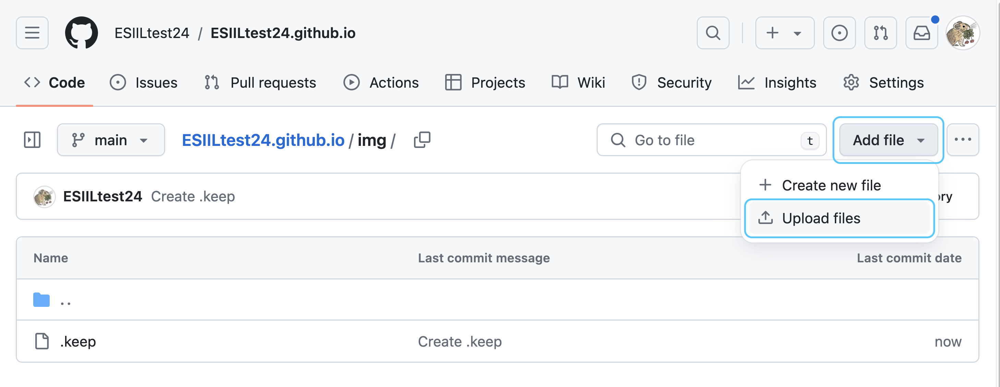
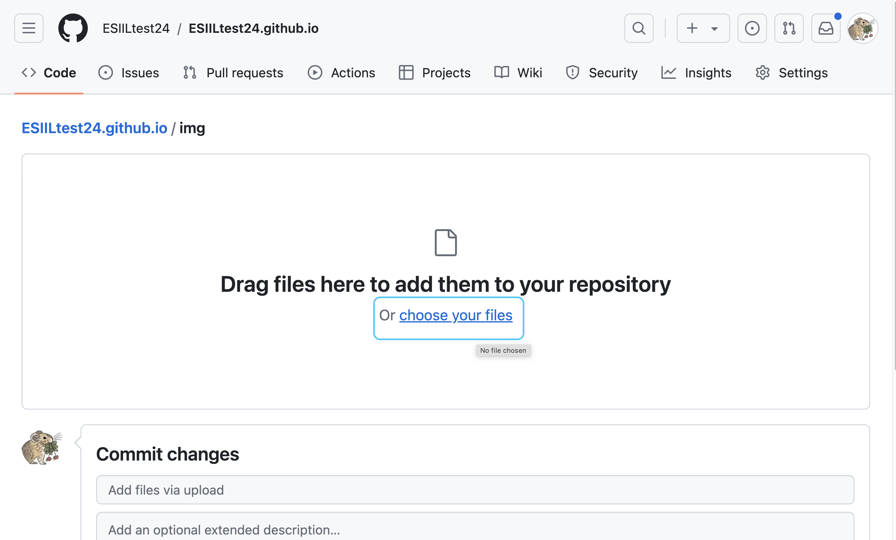
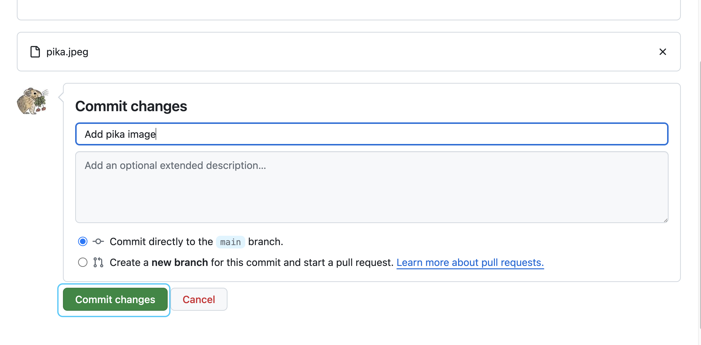
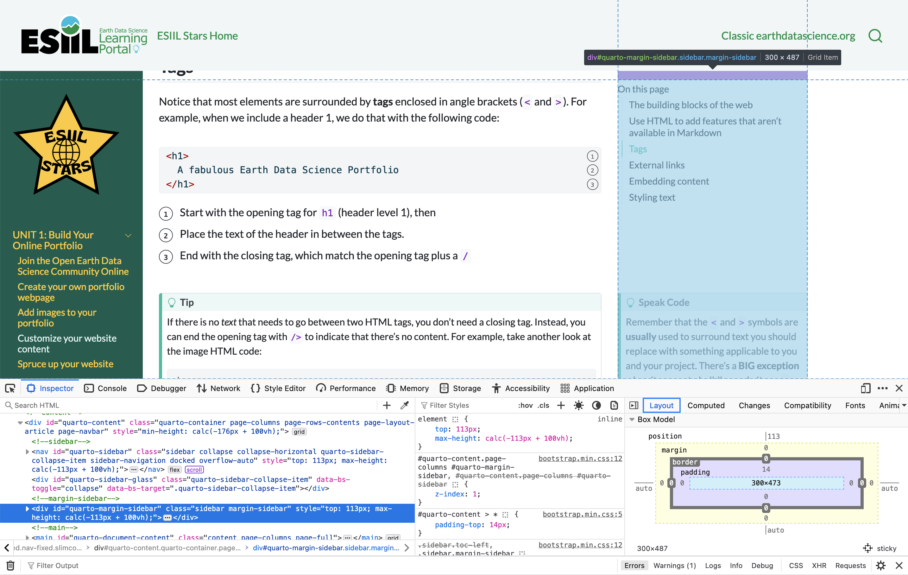
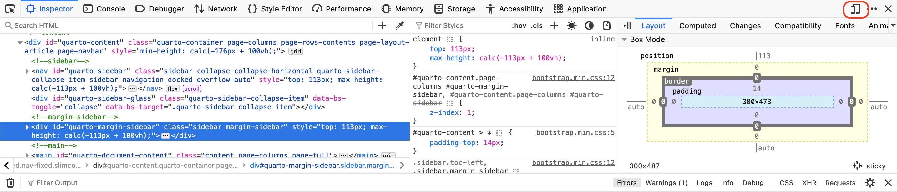

Build your Environmental Data Science portfolio
Tell us about yourself and get started with open, reproducible science
Your first project for Stars is also your first step towards becoming an Environmental Data Scientist – building a portfolio website so you can share your work!
- true
- Build a portfolio website to share your work
- Get to know each other
- Explain how web publishing is important for open science
- Describe the web publishing tool GitHub Pages
- Name some advantages of GitHub Pages for web publishing
Science communication, Internet publishing
Welcome to your first Earth Data Analytics Coding Challenge!
When we meet for our next class, we’d like for all of us to be able to share our websites with each other. You don’t have to have any data science projects on it yet! But, there are a couple of reasons we are assigning this challenge:
- It’s a great way to get to know each other! We hope you will show off your creativity and share about yourselves and your community on your website.
- Portfolio websites are incredibly valuable when you are looking for jobs or collaborators on data science projects. Anyone can say they know how to code – a portfolio shows it’s true.
- Thought it’s not Python, you’ll need to understand some fundamentals about how code works to write your website. Code has a syntax that is more structured than written language, which you’ll be able observe that while using Markdown and HTML. Code is also built to be able to do similar tasks repeatedly by changing parameters. Keep an eye out for these concepts as you work through this challenge!
To complete this challenge, you will need to:
- Build and publish your portfolio page
- Write about yourself and your interest in environmental data science
- Add at least one image
You can optionally add additional formatting and a theme to your webpage. We’ll work through adding a map to your page together – but you’re welcome to try it out yourself if you need an extra challenge! We’ve provided a lot of resources here to help you, including written descriptions, screenshots, and video demos. However, don’t hesitate to reach out to us if you run into a problem.
Get started with open, reproducible science
The internet has revolutionized science publishing. For example, most published scientific papers are now made freely available online within one year (Randall Munroe, 2013):

It’s not just peer-reviewed publications that have changed – scientists all over the world now use websites, blogs, and social media to discuss, communicate, and publicize their work. The internet is also a great way to transparently involve your community in your research.
Not all science has to be open! It’s important to think about the impacts of publishing your work on people and communities wherever you are studying, and also honor principles data sovereignty. We will talk about some ways to publish your work while omitting or obscuring sensitive details, but for now make sure that you and your mentors are comfortable before putting your work on the internet.
There are lots of tools available for creating free websites. We, as Earth and Environmental Data Scientists, like to use a platform called GitHub Pages for a couple of reasons:
- It’s completely free to use, event for larger websites (like this one!).
- It is a feature of the code collaboration website GitHub, which is already where most programmers and scientists keep their code. Keeping our websites on GitHub also means that we can collaborate on and discuss them online, the same way we would any other code.
- It can automatically build an attractive website using text-based, human-readable tools.
- It can automatically incorporate the plots and maps generated by code.
- Though GitHub itself is not open source software (it’s owned by Microsoft), Pages is built on open-source tools. This means that if for some reason the availability or pricing structure ever changes we could download the code and put the website up somewhere else.
Check out our explainer video to learn more about what a personal portfolio webpage can do for you, and see some examples from previous students!
INTRO: Portfolio pages by ESIIL
In the following lesson, you will learn how to create a personal portfolio webpage and publish it for free using GitHub Pages.
STEP 1: Create your own portfolio webpage
GitHub is a powerful software development tool owned and operated by Microsoft. It is used almost universally for software development and scientific projects. It lets you:
- Keep track of all the changes you have ever made, when, and why
- Collaborate with others
- Get your code online so you can access it anywhere
- Use a cloud platform to run your code
- Publish a website in minutes
We’ll be focusing on that last feature in this activity, in which you will create and publish your own online portfolio website. Read more about git and GitHub in our open Earth Data Science textbook pages.
Follow along with our video demo here:
DEMO: Build your portfolio by ESIIL
STEP 1A: Create a GitHub account
Use this link to create a free GitHub account.
If you already have a GitHub account, there is no need to create a new account!
STEP 1B: Create a repository
Once you have a GitHub account, get started by creating a new repository for your webpage. There are several ways to accomplish this task.
Sometimes buttons on GitHub are blue instead of green.
A GitHub repository is a collection of code, documentation, and configuration files. All changes you make in a repository will be tracked using the version control system git. You can discuss and manage your project’s work within the repository.
To do this you can:
Navigate to your profile page
Click on the dropdown arrow next to your profile photo in the upper right corner
Select
Your profile
Select Your profileSelect the Repositories tab from the menu near the top of the page.

Select the Repositories tab from the menu near the top of the page. From here, you can select the green New button on the right to get started.

Select the green New button on the right to get started Customize the settings:
- Give your repository a short and descriptive name. We recommend
<yourusername>.github.iobecause it results in the simplest url for your website. - Give your repository a description
- Make your repository Public
- You can skip adding the gitignore file for now
- Add a README so your repository home page (on GitHub, NOT your published website) will include your title and description
- Choose a License for your repository. Check out choosealicense.com for more information about popular options.
- Give your repository a short and descriptive name. We recommend
Once you’re done, select the green Create Repository button at the bottom of the page
When reading code snippets, the < and > symbols are usually used to surround text you should replace. Do not leave the < and > symbols in place!. For example, in this case your repository name would be jdoe.github.io, if jdoe was your GitHub username. There’s a BIG exception to this rule when it comes to building websites – < and > are key characters if you are using HTML.
A license, copyright, and data rights or data sovereignty are all slightly different. A license is about whether and how someone else can use the code in your repository. Copyright is about the text published on your website, and data rights are about whether and how others can use your data
STEP 1C: Create a new index.md file
You will create a new file called index.md that will serve as the content for your webpage. To do this you can :
Select the Add file button from the menu on the right
Select Create new file.

Select Create new file. Name your new Markdown file
index.md. This will make it the home page of your website. Then, add a Markdown header text to your index file, e.g.
# A fabulous Earth Data Science PortfolioYou can change this text to your name or something else. This is your website, and you’ll always be able to come back and make edits!
STEP 1D: Commit changes
Now that you’ve created your index.md file and added some text, you’ll want to commit changes to your repository. Add an optional extended description of your changes and then select the green Commit changes button at the bottom of the page.

STEP 1E: Build your webpage
Once you’ve created your index.md file you’re ready to build your webpage:
From your repository, select the Settings tab from the right end of the menu.

Navigate to your repository settings From here, scroll down the menu on the left and select Pages.

Select the Pages settings tab Now you’ll want to select the main option under the Branch heading and then select Save.

Select the main branch in your repository
STEP 1F: Check on your webpage
Check in on your webpage to see how it is doing by opening the link https://username.github.io/ in a new tab in your web browser. Here, you’ll need to replace username with your GitHub username. Once you see your name (or whatever text you added to your index.md file in Step 2) appear as a Markdown header, then you know your webpage is working!
Sometimes your webpage can take a minute or so to build so be patient and refresh every 30 seconds or so until the page is done building. You can track the progress in the Actions tab.
STEP 1G: Start adding information to your webpage
Review the **Markdown Basic Syntax guide to help you format your webpage using Markdown and HTML. We also have a lesson in our Earth Data Science textbook that may be helpful.
Now you’re ready to start adding some more information to your webpage. Navigate back to your repository and open the index.md file that you just created. You will edit this page by clicking on the pencil icon on the right of the menu near the top of your repository page on GitHub. You will use Markdown and Hypertext Markup Language (HTML) to add text, links, images, and other content to your webpage. Markdown and HTML are both common markup langauges, and have wide application including formatting text, report writing, and website development.

Here you should think about adding the following information to your webpage:
- Your name (as a header) if you haven’t already
- A bulleted list of links to your public contact information (email, GitHub account, LinkedIn account, social media accounts, etc.)
- Your educational and professional background
- A biographical paragraph about yourself
- What you’re excited about learning about Earth Data Science
- Questions that you’d like to answer using Earth Data Science
You should also plan to add a photo of yourself and/or where you live. We’ll go over how to add and customize images on your page in the next two lessons.
Always remember to commit changes so that your updated content gets added to your webpage.
STEP 2: Add images to your portfolio
Follow along with our video demo here:
Images make your website easier to understand
The following code will display an image from the internet using Markdown:

Image source: image of the Mississippi Delta from the Jet Propulsion Laboratory DeltaX project
Always make sure you have permission to use images, and give credit to your image sources. Most images are fair to use for education (teaching, research, and study), as long as you give credit to your source. If you later on decide to use your portfolio to make money (for example, if you use it as marketing materials), then you should reconsider what images you are using.
Learn more about fair use from the CU Library Fair Use page.
Adding your own images
Including images from the web is the easiest way to add images to your site, but you will probably want to include your own images! There are three common ways that you can add images you have taken or created to your website:
- Uploading an image to your portfolio repository on GitHub
- Uploading an image elsewhere and then linking to it
- Generate an image with code and render it into your website
We’ll try out the first two options in this lesson. But first, you need to understand the difference between absolute and relative URLs on the web.
Absolute and relative links
On your website, you can link to files on the web, or you can link to local files.
Absolute URLs are on the web, and so they begin with something like http:// or https://. When you are using an absolute link, you don’t need to worry about your file structure – for example, what folder your Markdown file is in. If you move things around in your project the link will still work.
Links on the internet aren’t forever. If you are using an absolute link, you should check on it occasionally to make sure it’s still there. You can also select image sources that are more reliable long term, or even an image with a permanent link or Digital Object Identifier (DOI).
Relative links are to files that are local, or in the same location as your website. Keep in mind that what is local can change if you keep multiple copies of your repository, such as one on GitHub and one on your computer. Relative links, because they will change depending on the file and directory structure of your website. If you are working on your own computer, you can link to a file that isn’t in your repository, and then it won’t show up when you deploy your site.
Directory is another word for a folder on your computer – you can organize files by putting them in directories.
There’s a couple of special characters when using relative links. Suppose you have a Markdown file in a pages directory, and an image you want to display in an img folder:
<username>.github.io/
├── README.md
├── pages/
│ └── index.md
└── img/
└── cool_satellite_image.jpegIn the text diagram to the left, indentation and lines are being used to show which files are inside which folders – for example the index.md file is indented under the pages directory and connected by a line, indicating that index.md is inside pages.
When you are working in index.md, you are in the pages directory. If you want to go up a directory to <username>.github.io from pages, you can use ... For example, ../img/cool_satellite_image.jpeg.
You can also make website paths starting from the root directory of the site, in this case <username>.github.io, by starting the path with a slash character, /:

The equivalent link to ../img/cool_satellite_image.jpeg would be /img/cool_satellite_image.jpeg.
Upload an image to GitHub
STEP 1: Create an empty image directory on GitHub
It’s important to keep your files organized in a project like a website. Before uploading any images, you should make a place to put them. By convention, images in most websites are kept in the img directory, but you can name it whatever you want.
git, the system used by GitHub to keep track of changes to files, doesn’t keep a record of directories without any files in them, and as of now you can’t upload an image to a directory that doesn’t exist yet. This puts us in a bit of a pickle! Fortunately, there’s a common solution – we’ll create an empty text file named .keep in the new directory.
You could name your empty placeholder file anything you want. However, there are two good reasons to use .keep as your filename. First, files that start with a dot (.) are hidden in unix-based operating systems like linux and MacOS, which helps avoid clutter when you are looking at your files. Second, adhering to the convention means that anyone else looking at your repository will know what the .keep file is doing there.
To create a img/.keep file, go to the main page of your website repository on GitHub and click the Code tab. Then, find the + menu button on the upper right and select Add a file from the dropdown:

Type `img/.keep into the name field and then commit your changes:



When you type img/, GitHub will automatically make a folder, so only .keep will be visible in the text box.
STEP 2: Upload your image to the img directory
First, make sure that the name of your image file on your computer is descriptive and machine-readable (doesn’t contain any spaces or special characters other than _, -, or .). You won’t be able to rename your file once you upload it to GitHub.
You should now be in the img directory in your repository. If note, you can get there from the Code tab in your website repository, by clicking on the img directory in the files. From there, click the Add file menu in the upper right, but this time select Upload files:

Drag your image file, or browse and select it.

Finally, write a message and click Commit changes: 
Other places to host images
GitHub has a couple of limitations when it comes to hosting images:
- The site will not allow you to upload files larger than 100MB
- If you make changes to an image file, GitHub will keep all the previous versions, which can make your repository unwieldy to download. If you are generating image files yourself and changing them frequently, consider hosting them somewhere else.
So, where can you host images that you have taken or generated? There are a few options:
- You can use the Free Image Hosting service to upload images without an account or giving up any information about yourself. Note that while you retain ownership of these images you are granting a license to Free Image Hosting to use them however they want.
- For a final version, you can use a research hosting service like figshare to upload images and get code to embed them in your website.
- If you want to use photos you have already uploaded to social media, you can usually get a direct link by right-clicking on the image and selecting
Copy Image Link. - You will likely find that most file storage services such as Google Drive and Dropbox don’t provide you with a direct link to images that you can use in a website. You can look for instructions on generating direct links for these files, but they are often unsupported and could change without warning.
- There’s another way of hosting on GitHub that doesn’t have the same drawbacks when it comes to large files. You can include files in a release, which creates a direct link to files, but does not attempt to track changes. To get started, follow the instructions from GitHub documentation. Note that once you have a release you can add additional files to it.
By uploading images to social media or other hosting services, you are sometimes giving up your rights to the image, or granting. Photo apps like Flickr are usually better bets, since they are built for photographers with copyright protection in mind. But be sure to read the fine print when uploading material that is sensitive to you personal or to your community – you can look for the term ownership rights in the Terms and Conditions of whatever sites you use.
STEP 3: Customize your website content
The building blocks of the web
Most web pages are built using three key technologies:
- Hyper-Text Markup Language (HTML) includes and structures the content
- Cascading Style Sheets (CSS) controls how the page looks
- Javascript (JS) controls what the page does
When using GitHub Pages, you can rely on GitHub to translate Markdown to HTML before putting it on the web using a system called Jekyll. You can see the result by:
- Navigate to your portfolio page on the internet
- Right-click anywhere on the page
- Select an option like
InspectorWeb Developer Tools, depending on your browser.
You should now see the source code for your webpage in a new panel. What do you notice about your content? How is it different from what you wrote?

You can also control CSS and JS to a limited extent on GitHub Pages. However, we recommend sticking with the CSS and JS supplied by a Jekyll theme created by a designer. It’s hard to make a website that looks good from scratch. We’ll get into how to add a theme using Jekyll later on.
Use HTML to add features that aren’t available in Markdown
When creating your webpage, you might want to do a couple of things with your content that most types of Markdown can’t do, such as:
- Specify the size of an image
- Control whether links open up in a new tab
- Embed videos and other web content
- Change colors, fonts, or font sizes in one section of your page
HTML (Hyper-Text Markup Language), does have the ability to do all those things and more.
Make sure to format your HTML code so that it is readable
One great thing about Markdown is that it is both human-readable and machine-readable. It’s a little harder to tell what is going on with HTML, especially if it is formatted poorly. For example, take a look at some Markdown and its equivalent in HTML. Unlike Markdown, the computer doesn’t care how we use whitespace when formatting HTML. We can make HTML easier to read by adding whitespace and new lines:
1# A fabulous Earth Data Science Portfolio
2
Some text and [a link](https://www.my_link.org) and:
* A
* Bulleted
* List- 1
-
The will be a level 1 header because it begins with one
# - 2
-
This will be an image since it starts with a
!
<h1>A fabulous Earth Data Science Portfolio</h1><img
src="/img/cool_satellite_image.jpeg" alt-text="Super-cool satellite imagery">
<p>Some text and <a
href="https://www.my_link.org">a link</a>
and:</p><ul><li>A</li><li>Bulleted
</li><li>List</li></ul>1<h1>A fabulous Earth Data Science Portfolio</h1>
2<!-- Comments help the reader understand your code -->
<img
src="/img/cool_satellite_image.jpeg"
3 alt="Super-cool satellite imagery" />
<p>
Some text and <a href="https://www.my_link.org">a link</a>
and:
</p>
<ul>
<li>A</li>
<li>Bulleted</li>
<li>List</li>
</ul>- 1
-
This is a level 1 header, since it is surrounded by
h1tags. - 2
- Comments won’t appear on your web page
- 3
-
The
imgtag will be an image.
HTML syntax for Markdown users
Every coding language has some special characters and structures, known as the syntax. When you render or run code, the syntax gets interpreted into some kind of behavior. For example, in Markdown, the syntax # gets interpreted as the start of a level 1 header.
HTML is less human-readable than Markdown. To use it effectively, you will need to understand some key vocabulary about the syntactic elements of HTML.
Parameters
In addition to marking the beginning and end of HTML elements, tags can contain addition information about how to display their contents. This extra information is known as parameters. For example, let’s revisit the code above for an HTML link, which contains the href parameter:
1<a href="https://www.my_link.org">
a link
</a>- 1
-
Parameters are included inside the opening tag. The parameter name (
href) must be followed by and equals sign=, and the parameter value (https://www.my_link.org) must be surrounded by quotation marks.
Include HTML directly in Markdown
You can add HTML elements into your Markdown documents. There is no need when using GitHub Pages to write entire documents in HTML; you can directly substitute HTML elements for Markdown elements where needed. For example,
Adjust the size of images
Say you have written the following Markdown to display an image:
Image source: Wikipedia
Unfortunately, the image is taking up the entire width of the section. You can’t adjust the size with GitHub Markdown alone, but you can replace the image with HTML and control the width:
<img
src="/img/pika.jpg"
alt="Super-cute pika!"
width="25%">If you set both the width and the height of an image, your image will become distorted:
<img
src="/img/pika.jpg"
alt="Super-cute pika!"
height="100px"
width="400px">When setting image height and width, there are different units you can use:
| Unit | Meaning |
|---|---|
px |
A pixel is the smallest item that can be displayed on your screen |
em or rem |
These units are relative to your font size (e.g. the width of an m) |
% |
A percentage of the element that contains the image |
When using px, keep in mind that others may be viewing your webpage on different devices (e.g. phone vs. computer). px units are pegged to the resolution of the screen, so this can result in vastly different sizes on different devices. Furthermore, rem measurements will change if the viewer zooms in or out of the page in their browser, making them more accessible.
You can simulate what your webpage will look like on another device using the Web Developer Tools. Usually there’s a button that looks like a screen in the upper right.

Open external links in a new tab
When you are linking to someone else’s webpage, often you want that page to open in a new tab or window so your reader doesn’t leave your webpage.
Note that some web designers and readers don’t like this behavior and would prefer that the reader decide for themselves whether they open a new tab or not. But it’s a pretty widespread practice, so it’s up to you how you want your webpage to work.
There’s no way to do this in most flavors of Markdown, but if you write your link in HTML you can at a target="_blank" parameter:
<a
href="https://www.my_link.org"
target="_blank">
a link
</a> Embedding content from other webpages
Markdown is great for text and images, but what if you want to content that is hosted elsewhere, like a video? HTML lets you load content from other webpages (also known as embedding content) using an element called an iframe:
<iframe
width="467" height="831"
src="https://www.youtube.com/embed/Oly8f4h5C78"
title="Natural Habitat Shorts- Chipmunks have cheek pouches used to store food. 🐿🥜"
frameborder="0"
allow="accelerometer; autoplay; clipboard-write; encrypted-media; gyroscope; picture-in-picture; web-share" referrerpolicy="strict-origin-when-cross-origin"
allowfullscreen>
</iframe>Usually the website that hosts your video will already have embed code prepared for you. For example, on YouTube you can find the embed code below the video:
Styling text
Style on a webpage refers to how the page looks. For example, you might want to change colors, fonts, or spacing on your page. Usually this would be done with CSS or with pre-styled theme elements. However, if you doing something small, you can use the style parameter in an HTML tag, as in the following examples:
STEP 4: Spruce up your website
Make attractive websites with themes
Website themes are a system for applying a particular design to your web content. They consist of acollection of website configuration files, content templates, and style files that control how a website looks, but can be filled in with any content. Themes are great because: * Your website will immediately look and function like the theme * Most themes allow you to change style elements (like colors and fonts), and store data (like your name and email address) in a central location. * Themed websites will most likely work on lots of different devices, like phones, tablets, and computers. You can double-check if your theme mentions being adaptive or responsive, bu most themes these days are. * Some themes support interactive components like photo carousels or lightboxes without needing to write a lot of code
Jekyll is a system for building websites from Markdown, HTML, and CSS. In fact, Jekyll is the system that GitHub Pages uses to deploy websites. This means that we can take advantage of free Jekyll themes to make any website look great.
Jekyll plays well with GitHub Pages
Supported themes
We recommend starting out by using one of the GitHub Pages supported themes. Follow these instructions from GitHub.
Even if you don’t ultimately end up using one of these themes, you can make sure that everything is working with one of these themes.
Remote themes
GitHub Pages allows you to add any Jekyll theme available on GitHub to your site with a configuration file.
To do this you can: 1. Choose the Jekyll theme you want to use (here are some examples). Note that some themes work more seamlessly than others, so you may have to try more than one. 2. Preview the theme by clicking Live Demo on jekyllthemes.io, or searching the GitHub README for a preview link. 3. Follow the instructions from GitHub on how to apply the theme using a _config.yml file. 4. Go to the GitHub repository for the theme by clicking on the Get THEME on GitHub button on jekyllthemes.io. Follow any instructions about customizing things like your name or the title of your webpage.
So what is YAML?
The _config.yml file is written in YAML, a human-readable format for structured information (lists and key/value pairs). Learn more about YAML on their website
The _config.yml file that you created to add a theme can also sometimes be used to change the title of your website from the default (the name of your repository). Check out the README for your theme to see what parameters are available For example, and example _config.yml file for the minimal theme looks like:
title: J. Doe's Awesome Portfolio Website
description: Check out my projects!
logo: img/headshot.png
remote_theme: pages-themes/minimal@v0.2.0You may need or want to add a _data/data.yml file or your own templates in _layouts in addition to the _config.yml file, depending on your theme. You will need to read the README for the theme you are using to see what you can customize. We recommend copying any example configuration files from the theme repository, and then modifying them to meet your needs.